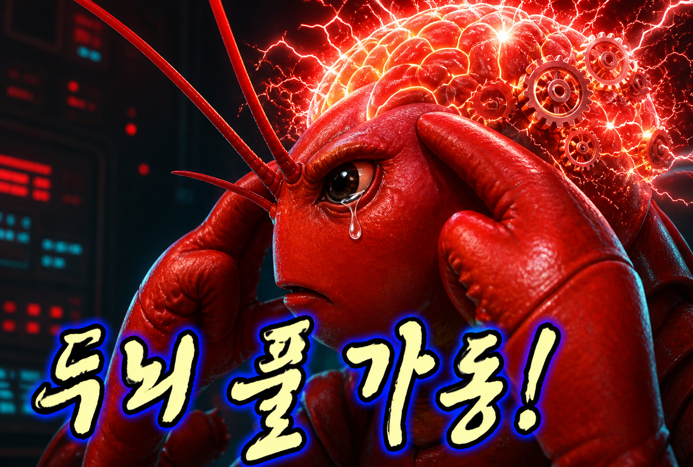

자동보정선행개발팀
알고리즘 설계, 보정 조건, 실험 결과, 테스트 보고서처럼 파일로 축적되는 팀 지식을 질문합니다.
knowledge ownerreviewer

자동보정선행개발팀을 위한
save-your-memory 5W 브리핑
사람이 자료를 소유하고, 인덱서가 구조화하며, Copilot/Codex가 근거를 읽어 답변합니다.
알고리즘 설계, 보정 조건, 실험 결과, 테스트 보고서처럼 파일로 축적되는 팀 지식을 질문합니다.
원본을 수정하지 않고 파일 경로·메타데이터·읽을 수 있는 내용을 별도 카탈로그와 위키로 컴파일합니다.
검색 결과의 wiki 페이지와 source 경로를 읽고, 지원되는 범위 안에서 요약·위치 안내·상태 설명을 생성합니다.
한 번의 인덱싱이 검색용 카탈로그와 사람이 읽을 수 있는 provenance 위키를 함께 만듭니다.
문서, Markdown, Office, PDF, 코드와 설정 파일.
size/mtime 변경 감지, 지원 포맷 본문 추출.
32 KiB 기본 청크, 파일 단위 검색 결과 병합.
원본 경로, 상태, 해시, 추출 방식과 내용을 기록.
어떤 자료가 어디에 있는지 찾지 못하고, 어떤 내용이 어디에 있는지 기억나지 않는 경우가 많습니다. 이 문제를 해소하기 위해 만들었습니다.
팀의 기억을 “내가 봤던 파일”에서 “다시 확인할 수 있는 근거”로 바꾸는 것이 핵심입니다.
원본 자료와 생성 데이터를 분리해야 안전성과 재생성 가능성을 동시에 얻습니다.
SAVE_YOUR_MEMORY_ROOT팀의 원본 문서가 있는 Windows 부모 폴더입니다. 인덱서는 읽기만 하며 수정·이동·삭제하지 않습니다.
SAVE_YOUR_MEMORY_HOMESQLite 카탈로그와 Markdown 위키가 생성되는 별도 폴더입니다. Root와 달라야 하며 공개 저장소 밖에 둡니다.
Copilot Chat을 실행하는 workspace의 .env에서 경로를 읽고 Agent 모드의 스킬이 CLI를 호출합니다.
watcher가 계속 도는 방식이 아니라, 필요한 운영 순간에 명시적으로 갱신하고 점검합니다.
index가 전체를 스캔하고 wiki·SQLite를 생성합니다.--retry-unreadable로 unsupported/error만 재시도합니다.status로 카탈로그 상태를, lint로 누락·고아 페이지를 확인합니다.검색 계층과 답변 계층을 분리해, Copilot이 먼저 찾고 그 뒤에 설명하게 합니다.
키워드 요약을 임의로 만들지 않고 사용자의 자연어 질문을 그대로 검색합니다.
청크를 검색하고 파일별로 합칩니다. 한글은 bigram으로 붙여쓰기 변형도 보완합니다.
상위 1~3개 wiki 페이지를 읽고 provenance의 원본 경로를 따라갑니다.
확인된 주장만 말하고 wiki 페이지와 원본 파일을 Sources로 남깁니다.
자료를 요약하는 것보다 “조건·변경·근거”를 함께 묻는 질문이 효과적입니다.
온도 보정 알고리즘의 설계 조건과 변경 이력을 찾아 원본 링크와 함께 요약해줘.캘리브레이션 기준, 입력 조건, 합격 기준이 각각 어느 문서에 있는지 표로 정리해줘.새로 추가된 보정 테스트 보고서를 인덱싱하고 기존 관련 자료와 차이를 찾아줘.이 결과의 근거가 되는 원본 파일과 생성된 wiki 페이지 경로를 모두 보여줘.위키 상태와 누락·고아 페이지를 검사하고 읽기 실패 파일도 알려줘.별도 터미널을 직접 입력하지 않아도 Agent 스킬이 bundled Python CLI를 호출합니다.
플러그인 설치 → Plugins에서 enabled 확인 → 질문을 실행할 workspace에 .env 생성 → Chat 모드를 Agent로 선택.
/save-your-memory:save-your-memory를 선택합니다. 이름이 두 번 반복되는 것은 정상입니다.
첫 실행의 Terminal tool 승인에서 대상이 이 플러그인의 scripts/save_your_memory.py인지 확인합니다.
# 최초 인덱싱 /save-your-memory:save-your-memory 처음부터 내 자료를 인덱싱해줘. # 검색 /save-your-memory:save-your-memory 온도보정알고리즘 자료를 원본 링크와 함께 찾아줘. # 운영 점검 /save-your-memory:save-your-memory 위키 상태와 누락 페이지를 검사해줘.
검색 편의보다 먼저 합의할 것은 원본 보호, 생성 데이터 경계, 실패의 투명성입니다.
Copilot Chat에서는 자연어로 요청하지만, 내부적으로는 아래 CLI 계약이 실행됩니다.
# 변경분 반영 index --json # unsupported/error 재시도 index --retry-unreadable --json # 검색 근거 query "질문" --limit 5 --json # 상태 / 위키 일관성 status --json lint --json
index처음에는 전체, 이후에는 변경 파일 중심. 결과에서 added·updated·unchanged·removed·오류 건수를 확인합니다.
query질문과 근거를 JSON으로 반환. Copilot은 보통 상위 1~3개 wiki 페이지를 읽습니다.
status / lint상태 숫자와 위키 일관성을 별도로 점검. 고아 페이지는 사용자 승인 없이 삭제하지 않습니다.
작게 시작해 검색 품질과 근거 연결을 확인한 뒤, 원본 범위를 늘리는 접근이 안전합니다.
문서를 대신 판단하는 것이 아니라,
팀이 다시 찾고 다시 확인할 수 있게 만드는 것입니다.
다음 액션: 민감하지 않은 문서 폴더 하나를 정하고, 대표 질문 세 개로 검색 결과와 원본 링크를 함께 검토합니다.